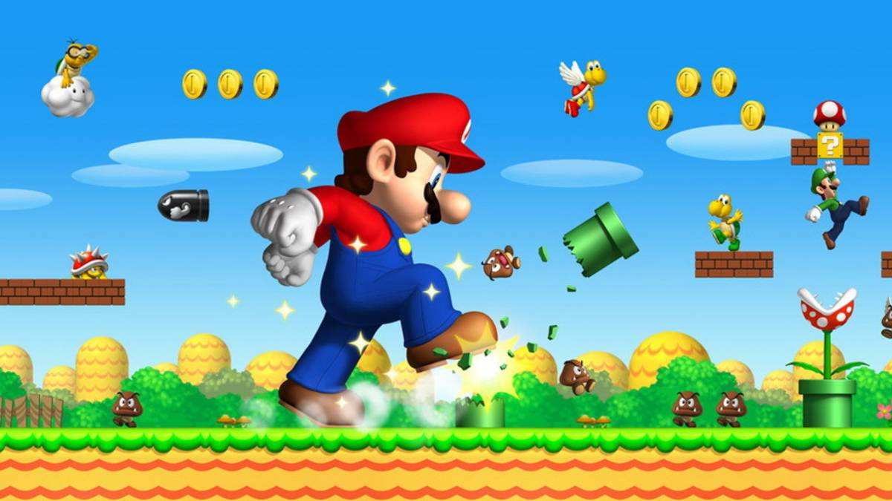

Este juego, que ha sido supervisado por el mismo Shigeru Miyamoto, creador de Mario, es una de las fuertes apuestas de Nintendo por Nintendo DS y uno de los más esperados por todos los usuarios de la portátil de la doble pantalla.
 No solo recupera el espíritu de los antiguos Super Mario Bros, sino que también incluye ítems, situaciones y escenarios tanto de juegos de NES (Super Mario Bros. y Super Mario Bros. 3) como de Super Mario World y Super Mario 64. El argumento es el siguiente: Mario y la Princesa Peach pasean por el Mushroom Kingdom cuando una extraña nube ataca el castillo. Mario se acerca a investigar y Bowser Jr. aprovecha la oportunidad y secuestra a Peach. Mario tendrá que recorrer los mundos con el objetivo de rescatar a la Princesa Peach.